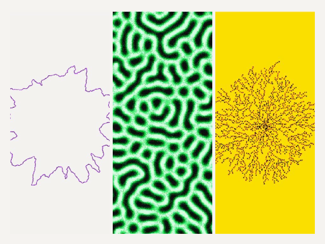

JUAN LICERIO
WORK
CV
CONTACT
LIGHT
← BACK TO WORK
TOOL /
LIVE / IN THE BROWSER

OPEN THE INSTRUMENT ↗
Five systems · PNG, SVG, GLB, PLY and ASCII export
Pick a system, type a seed, export on pause
ABOUT
LINKS